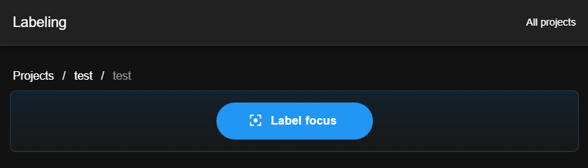
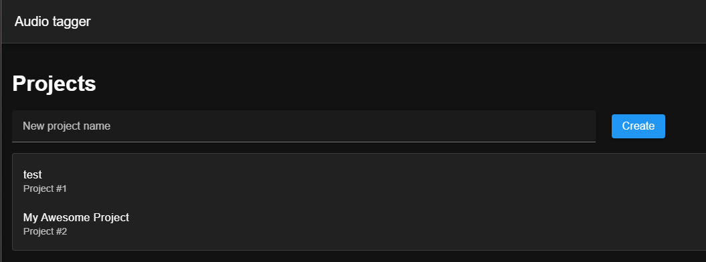
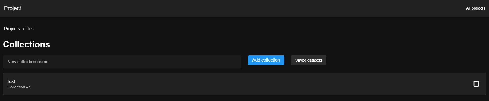
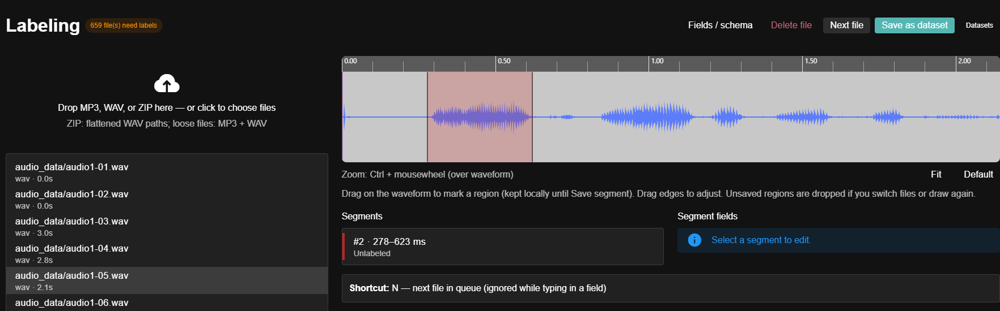
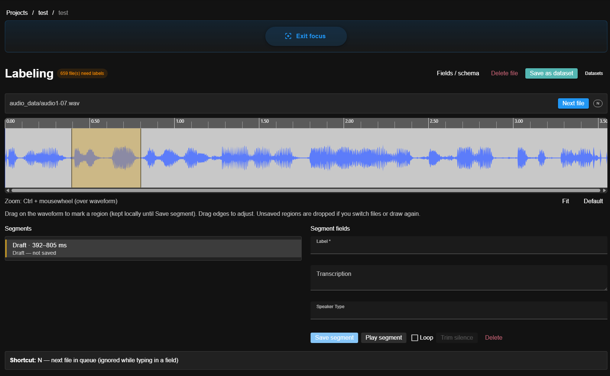
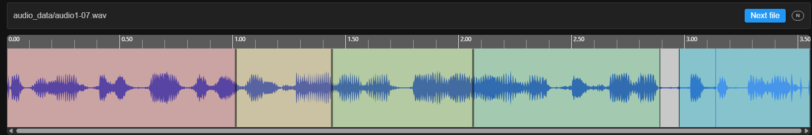
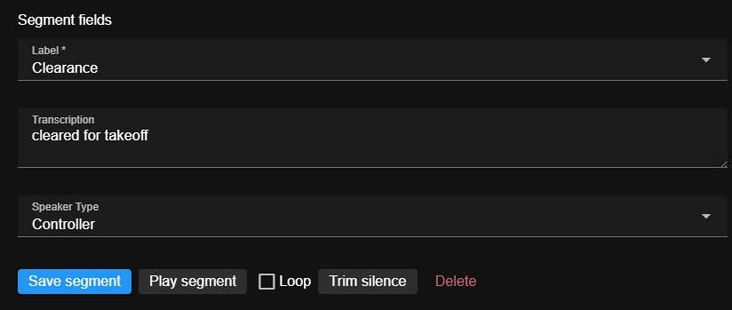
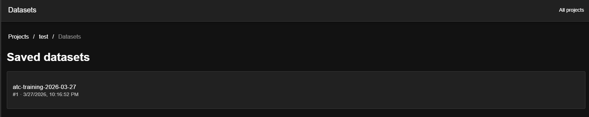
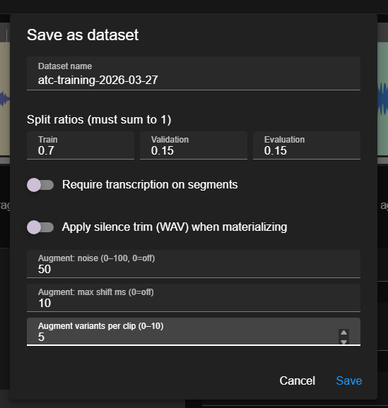
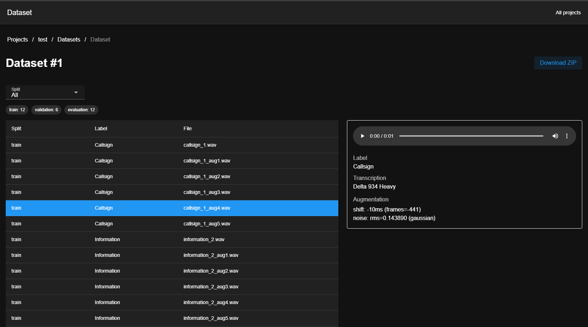

Vue + Vuetify frontend · Go API · SQLite storage
Standalone builds
Right now you run the app from a developer checkout: clone the repo, run migrations yourself, keep Go and Yarn installed, and juggle two terminals for the API and the Vite dev server. That is not a polished or ideal experience - it is fine for contributors and people who are comfortable with those tools, but it is not where I want to stop.
If this project proves useful and there is interest, I expect to improve how you run it: for example prebuilt binaries, a packaged desktop app, a single container image, or an installer that does not assume a full dev toolchain. There is no timeline or guarantee; this note only sets expectations that the current setup is acknowledged as rough and that better packaging is a likely direction when it is worth doing.
Get started
From a clean clone you can have the UI talking to the API in a few minutes: install toolchains, migrate the database once, run two processes, then open the dev server in your browser.
Prerequisites
- Go 1.22+ (see
backend/go.mod) - Node.js 20+ (LTS recommended) and Yarn 1.x - the frontend uses Yarn, not npm
- Git to clone the repository
Clone the repo and work from the project root (paths below assume that). Example:
git clone https://github.com/birdhalfbaked/aml-toolkit.git then cd aml-toolkit.
Apply migrations (once per machine or after pulling schema changes)
The API does not run migrations on startup. From the repo root:
cd backend && go run ./cmd/migrate
By default the SQLite file is backend/data/app.db when you run commands from backend/
(or set AUDIO_TAGGER_DATA / AUDIO_TAGGER_DB to control location - same vars as the
server). Override the file explicitly with go run ./cmd/migrate -db /path/to/app.db.
Run backend & frontend
Use two terminals from the repo root.
Terminal 1 - API (listens on port 8080 by default; set PORT to change):
cd backend
go run .
Terminal 2 - Vite dev server (serves the SPA at port 5173 and proxies
/api to http://127.0.0.1:8080 - see frontend/vite.config.ts):
cd frontend
yarn
yarn dev
First time only, yarn installs dependencies; afterwards yarn dev is enough.
Open the app
In your browser go to http://localhost:5173/. You should see the projects screen; create a project, add a collection, upload audio, and open the collection for labeling.
If API calls fail, confirm the backend is running on 8080 (or align PORT and the Vite proxy). For a
non-default API URL you can set VITE_API_BASE when building or running the frontend.
Optional: if you build the frontend to frontend/dist, the Go server can serve it when
AUDIO_TAGGER_FRONTEND_DIR points at that directory (defaults to ../frontend/dist relative
to backend) - useful for a single-process demo without Vite.
Overview
A project holds collections (folders of audio). You upload MP3/WAV files or ZIP archives; zips are flattened so nested paths become part of the filename. Open a collection to use the labeling view: waveform, segments, and configurable fields (taxonomy, transcription, etc.).
Label focus mode
On the labeling page, use Label focus for a wide layout: the upload/file list is hidden so the waveform and segment editor get full width. Use Exit focus when you need the file list or drop zone. In focus mode, the Next file strip (and the N shortcut) moves you through the labeling queue.

Projects & collections
Start from the Projects list, open a project, then pick a collection to label. Collection schema (fields / schema) defines required segment- and file-level fields.


Labeling
Drag on the waveform to mark a tentative region; it is only stored in the browser until you click Save segment. Draw again or switch files to discard a draft. Adjust region edges on the waveform; saved segments update the server when you finish dragging.




Datasets
A dataset is a built export from labeled audio (splits, filenames, optional augmentation, etc.). You start a build from labeling via Save as dataset, then manage and inspect exports from the project Datasets area.
Browse project datasets
The datasets list shows exports for the project; open one to see details or use actions from here as your app provides them.

Create an export
The Save as dataset flow names the export, sets splits, and configures generation - including augmentation and related options - before the build runs.

Inspect an export
The dataset detail view shows status, output paths, and other metadata for a single build.
